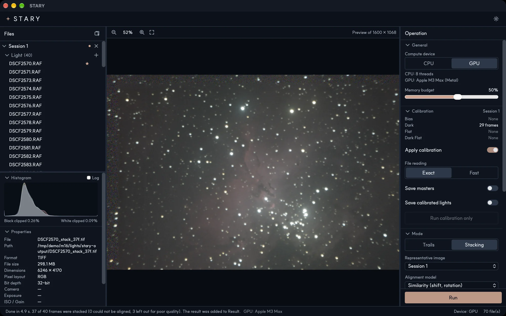
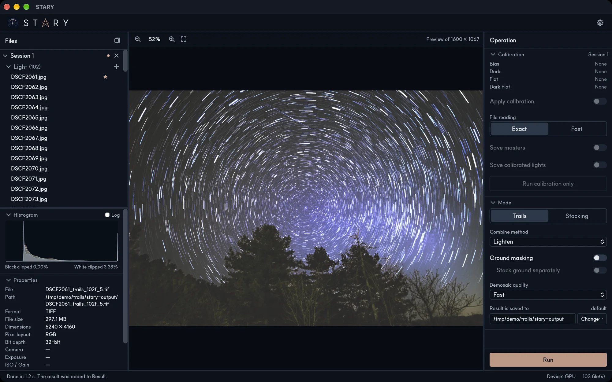
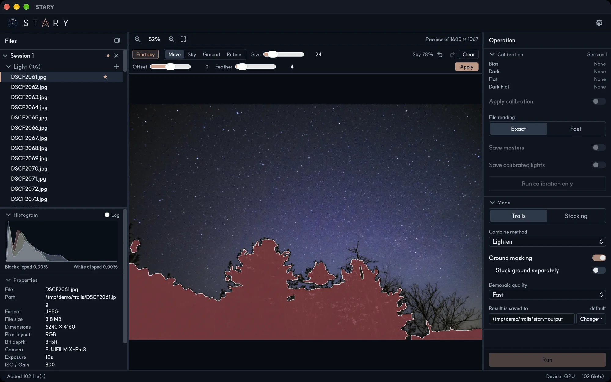

Deep-sky stacking
Bring out the faint glow of nebulae and galaxies by combining many frames into one clean picture. Passing satellites and unlucky shots are taken care of for you.
Every night, the sky writes its story in countless faint points of light. STARY gathers them, and turns a long night under the stars into a picture you will want to keep.
Add your frames, pick a mode and press Run. STARY takes care of everything in between.
Bring out the faint glow of nebulae and galaxies by combining many frames into one clean picture. Passing satellites and unlucky shots are taken care of for you.
Let the stars draw the turning of the sky: classic circular trails, glowing comet tails, and unbroken lines even when your intervals were long.
Remove what the camera and lens add — noise, dust and dark corners — before your picture is even built.
Keep the landscape sharp while the sky does its work. STARY finds the horizon for you, and you fine-tune it with a brush.
Bring several nights together, or blend bright cores and faint dust of different exposures into a single image.
Some features are experimentalYour graphics card does the heavy lifting, so hundreds of frames come together quickly. Pictures are saved at full quality, and exported for sharing or editing whenever you like.
Turn a whole night of exposures into one clean, detailed picture. STARY processes deep-sky frames quickly, and sets aside the ones that fall short so you always know what went into your image.


Hundreds of frames become the slow turning of the sky in moments, so you can try styles and compositions freely.
One click finds the sky. Refine the edge with a brush until it feels right, and the sky and the landscape each get the treatment they deserve.

Drop in your frames, along with your calibration frames if you have them.
Trails for star trails, Stacking for deep-sky images. Turn on ground masking if the landscape is in the frame.
Your picture is saved automatically at full quality. Export it for sharing whenever you like.